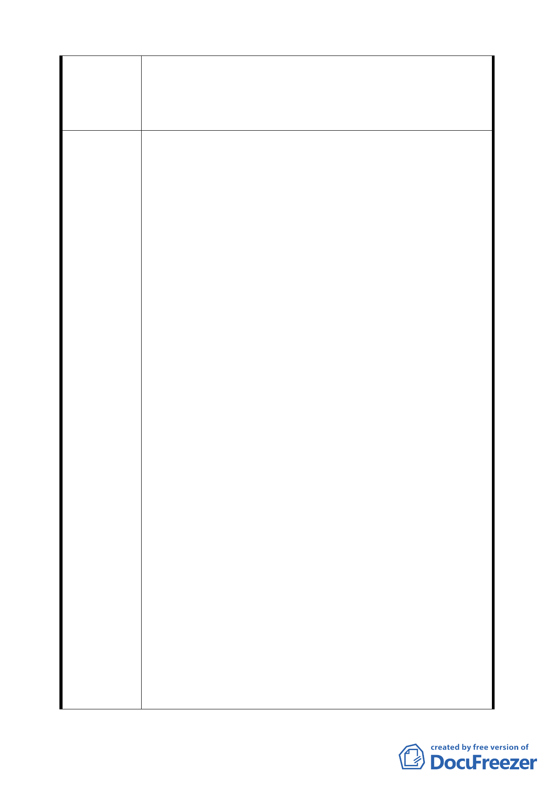

討案」中第柒條變更計畫內容，關於 R6 街廓之土地使用分區
管制規定及都市設計管制內容，並未詳細評估本街廓之條
件，給予公平合理之管制及容積放寬，建請修正部分計畫內
容，以增加建築設計之彈性並維護本街廓土地所有權人權益。
1.R6 街廓土地與 C5 街廓土地相鄰,屬同一完整街廓,公共開放
空間規定同為留設寬 20 公尺之帶狀式開放空間並另須退縮
留設寬 4 公尺騎樓(詳圖十一、示意圖一及示意圖二) 其中
圖十一公共開放空間系統之 R6 街廓依規定留設寬 20 公尺
帶狀式開放空間與圖七防災計畫圖之 R6 街廓火災延燒防止
地帶(寬 lO 公尺)所示範圍並不相符,依第柒條第五項第三款
規定,建議應與公共開放空間系統修正一致;另示意圖二 10
公尺帶狀式公共開放空間中剖面圖示之街廓編號內容及指
定牆面線規定有誤應隨修訂內容調整。
2. 有 關 都 市 設 計 管 制 要 點 之 最 小 建 築 基 地 規 定 ( 詳 圖 八 ),R6
街廓最小基地規模為 500 平方公尺,與相鄰 C5 街廓須全街
廓開發規定差距甚大,考量最小基地規模 500 平方公尺扣 除
留設之寬 20 公尺帶狀開放空間後可建築之基地面積過 小,
且依住宅區院落規定,受最小後院深度及最小後院深度比之
限制,建議應將 R6 街廓最小基地規模提高為 1000 平方公尺。
建 議 辦 法 3.依地下層開挖規模規定,R6 街廓為開挖率 55%，帶狀式開
放空間以不開挖地下層為原則,且地下開挖範圍須臨建築線
退縮至少 1.5 公尺後開挖為原則,本街廓扣除上述開挖規定
範圍後,造成建築設計上停車規劃沒有效率及深開挖等問題,
建議本街廓地下層開挖規模,參酌示意圖一 20 公尺帶狀式公
共開放空間圖,修正為以臨建築線 10 公尺植栽帶範圍不開
挖地下層為原則。
4.有關建築物高度限制規定(詳圖十),R6 街廓建築基地沿 2 號
道路境界線向內境深 50 公尺範圍,建築物高度不得超 過 60
公尺,以外街廓範圍,建築物高度不得超過 40 公尺為 原則,
然而沿 2 號道路同一側之 C4、C5、R8、R10、Rll 等街廓皆
無此限制規定,實無單就本街廓限制之必要,請參 酌修正,以
回歸並維護都市建築量體及天際線管制之原意。
5.考量本街廓地處商業區及住宅區交界且與 C5 商業區同為一
完整街廓,因相關寬 20 公尺帶狀式公共開放空間及 4 公尺
騎樓留設規定,所衍生之上述關於本街廓土地使用分區管制
18